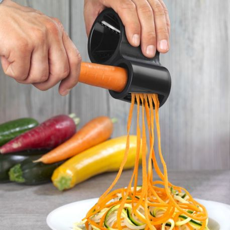
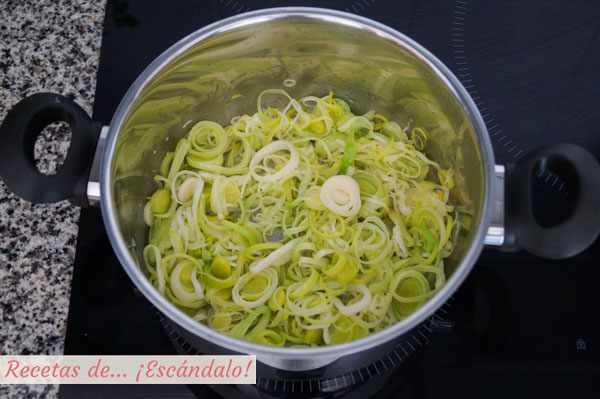
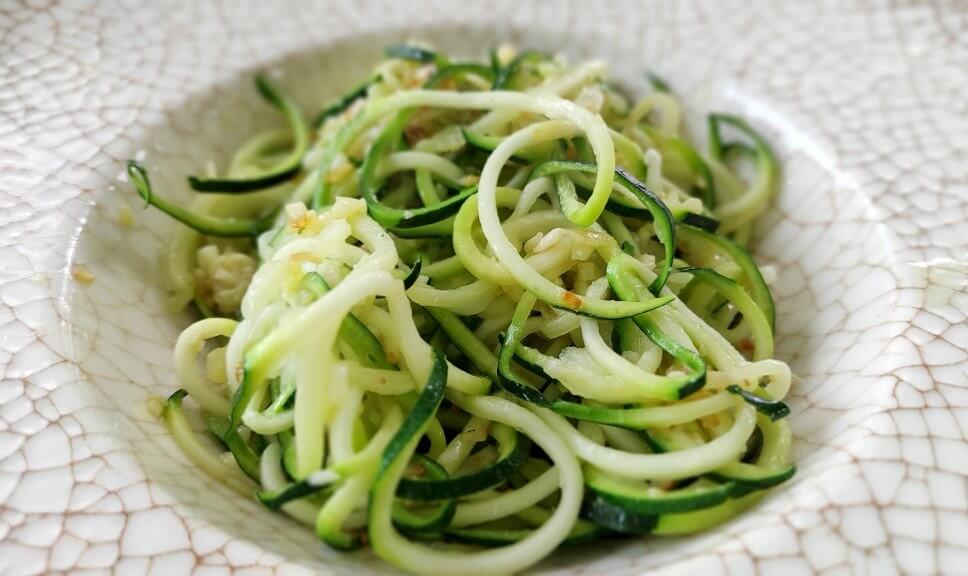
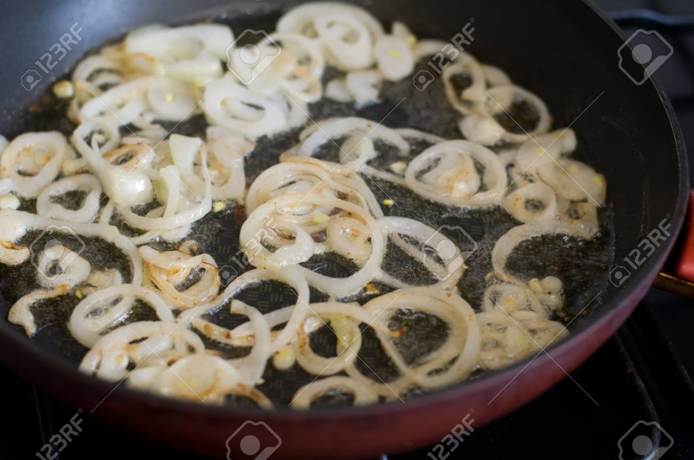
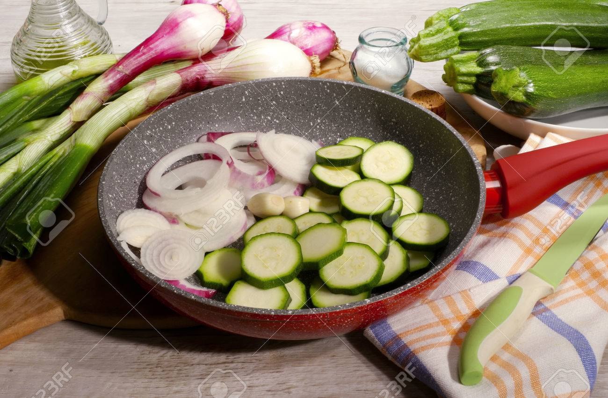
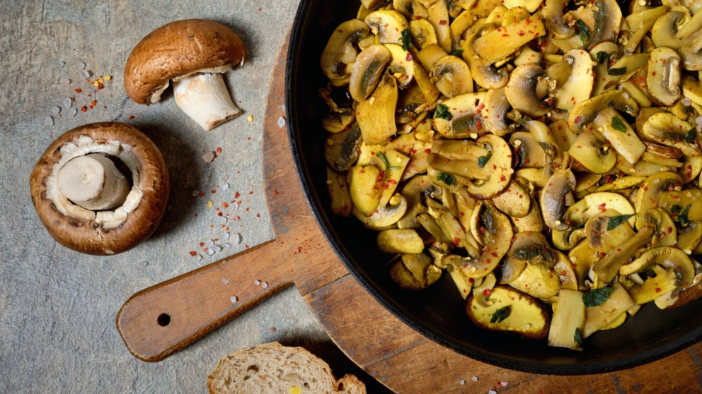
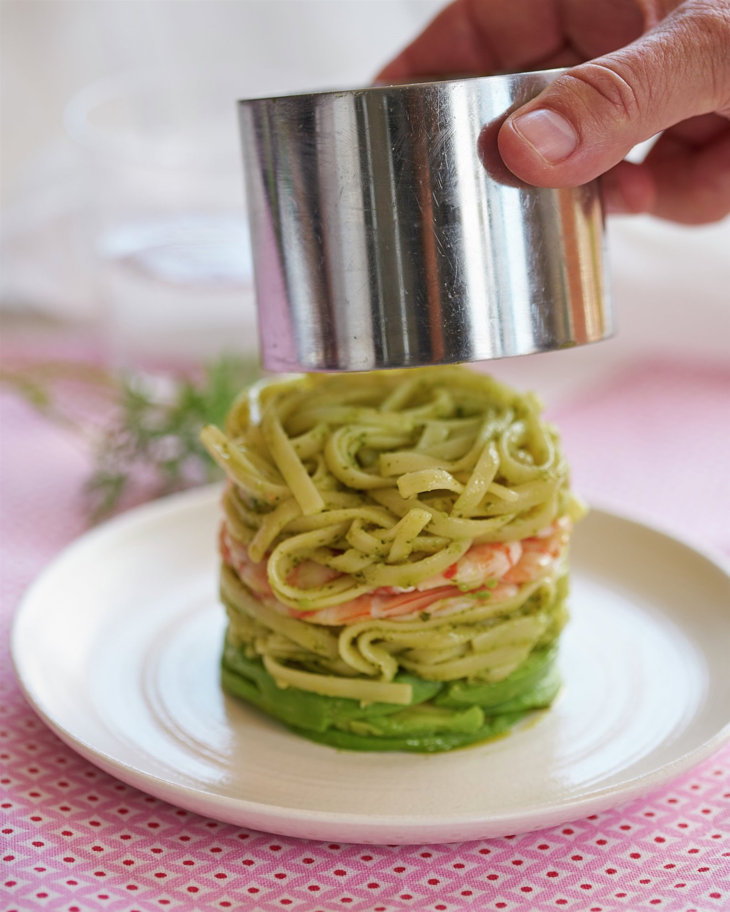

Regreso al menú
Espaguetis de calabacín con revuelto de setas
Índice:
Ingredientes (para 4 personas)
- Setas variadas.
- 4 hueros.
- 2 calabacines.
- 1 cebollas morada.
- 1 diente de ajo.
- 7 tallos de cebollino.
- Albahaca y orégano.
- 4 cucharadas de aceite de oliva.
- Pimienta y Sal.
Paso a paso
- Lava los , despúntalos y córtalos en espirales o en tiras finas y alargadas con una mandolina.

- Escalda las espirales de calabacín en agua hirviendo con sal durante 2 minutos.

- Escúrrelas y sumérgelas rápidamente en un bol con agua muy fría. Escúrrelas de nuevo y reserva.

- Pela la cebolla, córtala en tiras y sofríelas en una sartén amplia con 2 cucharadas de aceite 8-10 minutos a fuego suave.

- Añade las espirales de calabacín, sal, pimienta y saltea unos instantes. Agrega la mitad del cebollino picado.

- Trocea las setas más grandes y pela y pica el diente de ajo. Calienta una sartén con el aceite restante y saltea las setas 2 minutos.

- Agrega el ajo picado, salpimienta y cocina un par de minutos más.

- Bate los huevos, sálalos y viértelos en la sartén con las setas. Deja que cuajen a fuego lento, removiendo.

- Con ayuda de un aro de emplatar, reparte los espaguetis de calabacín en los platos formando un nido. Espovorea con el cebollino picado.

- Truco: Añade un chorrito de leche evaporada, al batir los huevos, para que resulte aún más meloso.
Resultado final
Este increible y deliciosa receta saludable de espaquetis de calabacín con revuelto de setas. Lleno de potasio, hierro, manganeso, vitamina A y C.
Una opción más veggie y sana de comer pasta que de costumbre.
 Regreso hacia arriba.
Regreso hacia arriba.